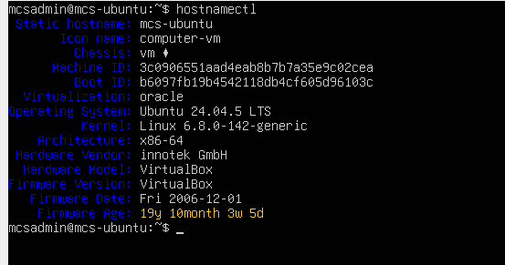
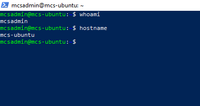
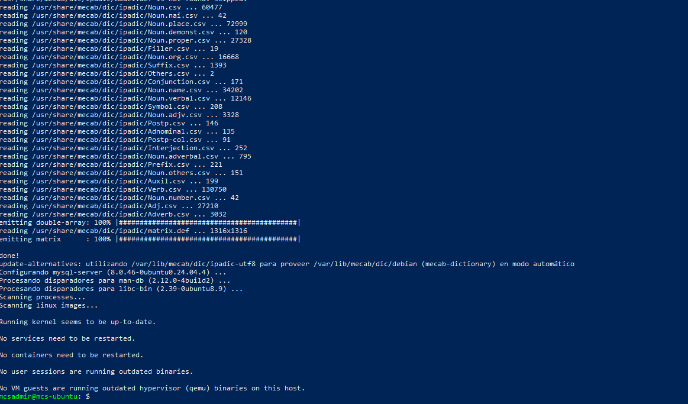
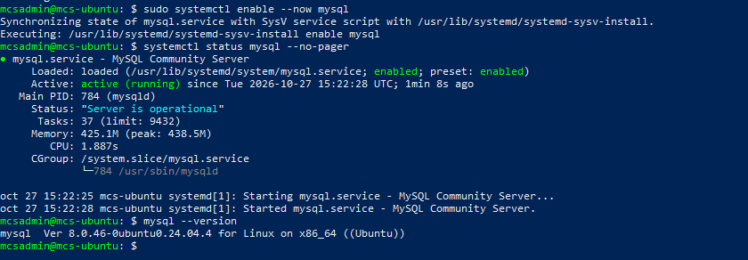
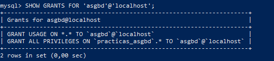
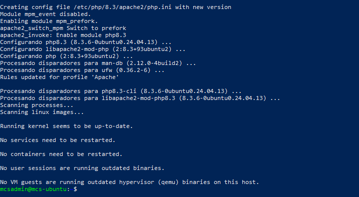
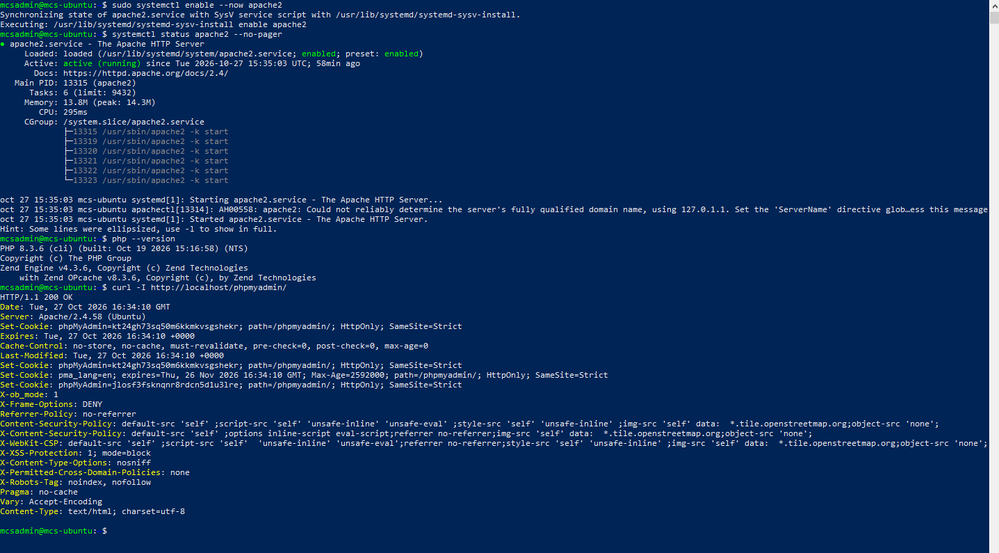
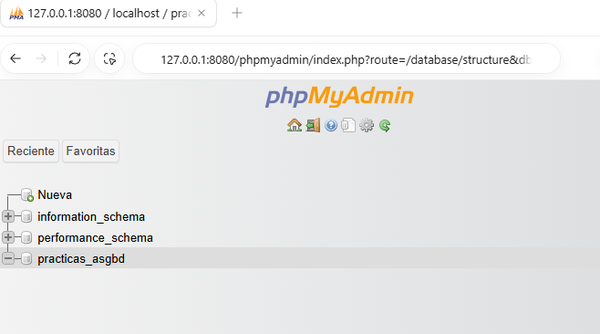
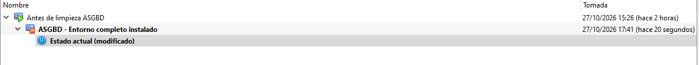

ENTORNO
UBUNTU.
Servidor de prácticas de ASGBD: Ubuntu, administración remota por SSH, MySQL y acceso web mediante phpMyAdmin.
Objetivo y entorno de trabajo
Preparar un servidor Ubuntu operativo para las siguientes prácticas de administración de bases de datos. La práctica parte de un servidor limpio ya disponible: la instalación del sistema operativo queda acreditada mediante su arranque y los datos del sistema.
| Máquina virtual | MCS-Ubuntu-Base marc · VirtualBox |
|---|---|
| Sistema y equipo | Ubuntu Server 24.04 LTS, x86-64 · mcs-ubuntu |
| Recursos | 2 CPU · 8 GB de RAM · disco dinámico de 40 GB |
| Usuario de Ubuntu | mcsadmin |
| Red utilizada | NAT · SSH: puerto 2222 del anfitrión → 22 del invitado · HTTP: 8080 → 80 |
| Usuario MySQL y base | asgbd@localhost · practicas_asgbd |
El servidor ejecuta MySQL, Apache y PHP; Windows se utiliza para administrar por SSH y abrir phpMyAdmin. Los nombres y recursos anteriores corresponden al entorno reutilizado en esta práctica.
Ubuntu Server iniciado
Se inicia Ubuntu y se consulta su identidad. La salida muestra la versión del sistema, el nombre mcs-ubuntu, la arquitectura x86-64 y la virtualización en VirtualBox.
hostnamectl
Requisito previo: conectividad
Se ejecuta la actualización del índice de paquetes para comprobar el acceso a los repositorios. El alumno confirma su finalización correcta. Se registra como requisito comprobado, sin captura.
sudo apt updateConexión SSH desde Windows
Desde PowerShell se establece una conexión remota a Ubuntu. El puerto 2222 del anfitrión se reenvía al puerto 22 del invitado. Una vez conectado, se comprueban el usuario y el equipo de destino.
ssh -p 2222 mcsadmin@127.0.0.1
# Dentro de Ubuntu:
whoami
hostname
Instalación de MySQL Server
Desde la sesión SSH se instala el servidor MySQL. Se espera a que termine el proceso y vuelva a aparecer el indicador de la terminal antes de recoger el resultado.
sudo apt install mysql-server
Servicio MySQL y versión
Se habilita el arranque automático y se inicia MySQL. A continuación se comprueba su estado y la versión instalada. El alumno confirma el estado active (running). Los tres resultados se documentan en una sola captura.
sudo systemctl enable --now mysql
systemctl status mysql --no-pager
mysql --version
Base de datos y permisos de prácticas
Se entra con la cuenta administrativa local mediante sudo mysql. Dentro de MySQL se crea practicas_asgbd con utf8mb4 y una cuenta de prácticas limitada a esa base. Sustituye el texto de contraseña por tu clave al reutilizar el ejemplo; las contraseñas no se incluyen en la documentación.
sudo mysql
-- Dentro del cliente MySQL:
CREATE DATABASE practicas_asgbd CHARACTER SET utf8mb4;
CREATE USER 'asgbd'@'localhost' IDENTIFIED BY 'TU_CONTRASEÑA';
GRANT ALL PRIVILEGES ON practicas_asgbd.* TO 'asgbd'@'localhost';
SHOW GRANTS FOR 'asgbd'@'localhost';
Interpretación de los permisos
La salida obtenida incluye GRANT USAGE ON *.* y GRANT ALL PRIVILEGES ON practicas_asgbd.*. USAGE no concede privilegios globales; los permisos de trabajo se aplican a la base de prácticas.
Ajuste de contraseña durante la práctica
Se corrigió la contraseña del usuario sin repetir la creación de la cuenta ni los permisos. No fue necesaria una captura adicional.
ALTER USER 'asgbd'@'localhost' IDENTIFIED BY 'TU_CONTRASEÑA';Instalación de Apache y PHP
Se sale del cliente MySQL con EXIT; y, en la terminal de Ubuntu, se instalan el servidor web y los módulos de PHP necesarios para conectar con MySQL.
sudo apt install -y apache2 php libapache2-mod-php php-mysql
Instalación de phpMyAdmin
Se instala phpMyAdmin y se selecciona apache2 como servidor web, marcándolo con Espacio antes de aceptar. Lighttpd se deja sin seleccionar. El alumno confirma que la instalación terminó. Su funcionamiento se acredita en las capturas siguientes, evitando una imagen adicional.
sudo apt install phpmyadminComprobación de Apache, PHP y phpMyAdmin
Se habilita Apache y se comprueban el servicio, la versión de PHP y la respuesta HTTP de phpMyAdmin. La captura revisada muestra active (running), PHP 8.3.6 y HTTP/1.1 200 OK. El aviso de Apache sobre ServerName no impide la respuesta correcta de la aplicación.
sudo systemctl enable --now apache2
systemctl status apache2 --no-pager
php --version
curl -I http://localhost/phpmyadmin/
Acceso web desde el anfitrión
Desde el navegador de Windows se abre http://127.0.0.1:8080/phpmyadmin/. Se inicia sesión con el usuario MySQL asgbd y se selecciona practicas_asgbd. La base todavía puede estar vacía: en esta actividad se prepara el entorno, sin crear tablas.

Instantánea final del entorno completo
Una vez instalados y comprobados los componentes, se apaga Ubuntu de forma ordenada. En VirtualBox, con la máquina apagada, se crea la instantánea ASGBD - Entorno completo instalado. Se realiza al finalizar, siguiendo la indicación de Marc comunicada por el alumno.
Este punto de recuperación permite volver al entorno completo antes de las siguientes prácticas.
sudo poweroff
Resultados de la práctica
Se ha preparado el entorno con Ubuntu Server, acceso SSH, MySQL Server, Apache, PHP y phpMyAdmin. Se han creado practicas_asgbd y el usuario asgbd con permisos sobre esa base. Las comprobaciones y capturas registran el estado de los servicios y el acceso web; el alumno confirma la creación de la instantánea final.
EXAM MODE
| Concepto | Qué recordar |
|---|---|
| Anfitrión e invitado | Windows es el anfitrión; Ubuntu en VirtualBox es el invitado. Los servicios se instalan dentro de Ubuntu. |
| NAT y puertos | 2222 → 22 permite SSH y 8080 → 80 permite acceso web. Los puertos del anfitrión y del invitado pueden ser diferentes. |
| Usuario Linux frente a usuario SQL | mcsadmin administra Ubuntu; asgbd@localhost es una cuenta de MySQL. Son cuentas independientes. |
| enable, start y status | enable configura el arranque automático; start inicia ahora; status consulta el estado. enable --now combina habilitación e inicio. |
| Servidor y herramientas | MySQL almacena y gestiona datos. Apache sirve la web. PHP ejecuta la aplicación. phpMyAdmin es una interfaz web, no el servidor de bases de datos. |
| Permisos | practicas_asgbd.* abarca los objetos de esa base. USAGE no da privilegios globales. SHOW GRANTS permite comprobar los permisos. |
| utf8mb4 | Codificación Unicode de MySQL capaz de representar caracteres de hasta cuatro bytes. |
| HTTP 200 y acceso SQL | HTTP 200 prueba que la ruta web responde. Iniciar sesión y ver la base comprueba además el acceso a MySQL. |
| Instantánea | Conserva un estado recuperable de la VM. Aquí se crea con todo instalado y la máquina apagada. |